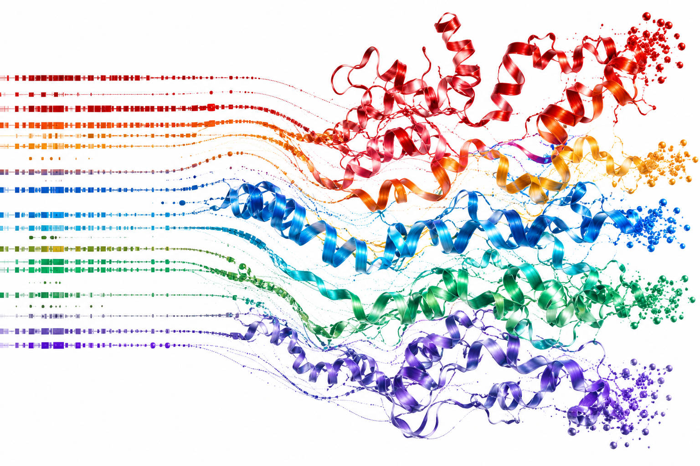
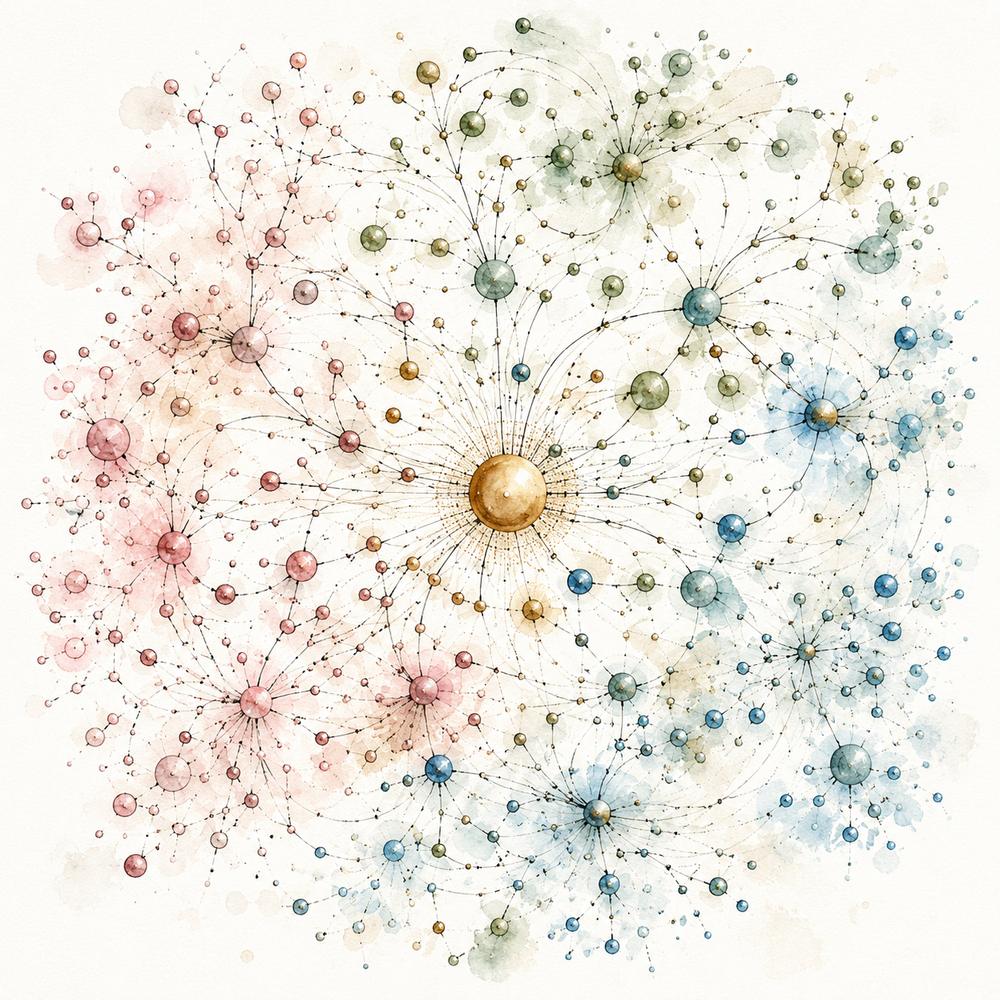

Senior Data Scientist & AI Engineer
Finding where AI creates real business value — then building the right solution, communicating it clearly, and driving adoption across the organisation.
The Question
The question I find most valuable in any organisation is not "how do we implement AI" — it is where would the right AI solution create genuine business value? That might mean eliminating a bottleneck that costs the team days each week, improving the accuracy of a decision that drives significant revenue, or enabling a level of insight that was simply not possible before. Over eight years across energy, healthcare, and finance, I have built my practice around that distinction: identifying the problems and opportunities where AI can make a real difference, and then doing the rigorous work of realising them.
The Method
Fourteen years of formal education in software engineering and artificial intelligence provide the depth to move fluently across a wide methodological toolkit — from classical machine learning to generative and agentic AI, from data pipelines to explainability frameworks — and select the approach that genuinely fits the problem. This demands more than technical proficiency — it requires a clear understanding of the underlying problem, sound judgement on whether AI is the right answer, and the foresight to choose an approach that will genuinely deliver.
The Delivery
The distance between a technically sound solution and an organisationally valued one is almost never algorithmic. It is a question of how clearly a solution is communicated, how naturally it integrates into existing workflows, and how confidently the people who depend on it learn to use it. Closing that distance is where the real work lies.
Building the data foundations that make models reliable — scalable pipelines, clean features, and systems that stay robust in production.
Selecting and applying the right approach for the problem — from classical machine learning to large language models and autonomous agents.
Writing the code that connects data, models, and users — clean APIs, maintainable services, and production-ready software that holds up under real-world conditions.
Bridging the gap between a technically sound solution and one that organisations actually use — through clear communication, stakeholder alignment, and end-to-end ownership.
NEC OncoImmunity (NOI) · Oslo, Norway
NEC OncoImmunity applies AI to personalised cancer vaccine design; the role was end-to-end ownership of that pipeline, from training and benchmarking specialised protein sequence models to building agentic discovery workflows and the explainability systems that made outputs usable by clinical and regulatory audiences. Every deliverable had to meet two bars simultaneously: strong performance against state-of-the-art baselines, and sufficient transparency for a regulated healthcare environment. The result was production-ready AI that moved the vaccine design process forward without compromising on clinical trust.
Sopra Steria · Oslo, Norway
A full-stack ML consulting role across oil & gas and finance clients, covering cloud infrastructure, end-to-end model development for geoscience and drilling teams, and the client-facing tooling that brought model outputs into operational use. The role demanded breadth: data engineering, model training and deployment on cloud platforms, API development, and responsible AI practices embedded across all production systems. The measure of success was adoption: models and pipelines that domain experts depended on in their daily work.
SIRIUS – Center for Scalable Data Access, University of Oslo · Oslo, Norway
An industry-partnered PhD at the University of Oslo, focused on a gap that was holding back AI adoption in high-stakes industries: the absence of reliable methods to explain, audit, and correct black-box model behaviour in real operational settings. The research produced novel explainability and model debugging algorithms, validated with industry partners across healthcare and energy, published at major AI conferences, and released as open-source tools. The foundation that has informed every applied role since.
An explainability layer built into AI-driven vaccine design pipelines at a biotech company developing personalised cancer vaccines. Clinical researchers and regulatory reviewers needed genuine insight into why a model ranked certain candidates — not just the prediction, but the reasoning behind it. Delivered interactive dashboards and prototype-based transparent models that made AI behaviour visible and auditable to domain experts.

Fine-tuned protein language models for classifying biological sequences in the context of personalised cancer vaccine development — where off-the-shelf models fall short of clinical and scientific standards. The work involved base model selection, rigorous evaluation framework design, and systematic benchmarking against state-of-the-art to validate every training decision. The result was a production-grade classifier that measurably outperformed baselines and directly informed the vaccine development roadmap.
An autonomous AI pipeline for identifying vaccine target candidates — combining semantic search over biological literature with sequence alignment and explicit human escalation triggers. Designed around uncertainty: confidence thresholds determined when the agent could proceed and when a domain expert needed to intervene. The result was a faster, more systematic approach to vaccine target discovery that kept human judgment in the loop where it mattered most.
A retrieval-augmented generation system producing AI outputs calibrated and interpretable enough for regulatory review in a clinical setting. The challenge was not retrieval accuracy alone — regulatory audiences need to trace the reasoning behind every conclusion drawn from complex biomedical literature. Delivered a system combining structured retrieval with rigorous benchmarking, meeting the interpretability bar that regulated healthcare environments require.
End-to-end ML models predicting missing petrophysical curves and lithology from well log data, deployed into the daily workflows of geologists and petrophysicists at an oil & gas client. The work covered data engineering, model development on cloud platforms, and integration into the client's industrial data platform. The measure of success was adoption — geoscience teams relying on the predictions as a standard part of their operational workflow.
A streaming ML system predicting subsurface properties on the fly during active drilling operations — processing live sensor data and returning predictions fast enough to inform in-the-moment decisions in the field. Built for a safety-critical environment where latency and reliability are non-negotiable. Delivered AI-driven intelligence embedded directly into drilling operations, putting data-driven decisions in the hands of geoscientists and drillers in real time.

A research project combining domain knowledge graphs and ontologies with ML explainability methods — making model explanations grounded in the structured knowledge that domain experts actually use. Standard XAI methods produce explanations that are statistically valid but often semantically meaningless to practitioners; this work addressed that gap directly. The result was an explainability approach that spoke the language of the domain, not just the model.
A methodology and toolkit for validating explainability methods in real industrial deployments — bridging the gap between research algorithms that perform in controlled settings and the practical demands of healthcare and energy environments. Designed evaluation frameworks, worked directly with domain practitioners to assess explanation usefulness, and iterated on what actually helped people make better decisions. Released as open-source tools adopted by both research and industry communities.
AI Governance Professional
IAPP · 2026
in progressBuilding with the Claude API
Anthropic Claude Academy · 2026
Claude Code in Action
Anthropic Claude Academy · 2026
Introduction to Agent Skills
Anthropic Claude Academy · 2026
Introduction to Model Context Protocol
Anthropic Claude Academy · 2026
Professional Scrum Developer I
Scrum.org · 2023
Professional Scrum Master I
Scrum.org · 2023
Kubernetes & Cloud Native Associate
Linux Foundation · 2023
Machine Learning Associate
Databricks · 2023
Data Engineer Associate
Databricks · 2022
DP-203: Azure Data Engineer Associate
Microsoft · 2022
Industrial Mentoring Program
SIRIUS / UiO · 2019
Publications
Demystifying the Model — Explainable AI and Uncertainty in the Context of Elastic Well Curve Predictions
86th EAGE Annual Conference & Exhibition
CARE: Coherent Actionable Recourse based on Sound Counterfactual Explanations
International Journal of Data Science and Analytics (JDSA)
Explainable Debugger for Black-box Machine Learning Models
International Joint Conference on Neural Networks (IJCNN)
Patents
A Feature Attribution Method for Distance-based Models
Submitted 2026 · NEC OncoImmunity
An ML Interpretation Method Using Domain Knowledge
Submitted 2026 · NEC OncoImmunity
A Similarity Method for Sequence and Time-Series Data
Submitted 2025 · NEC OncoImmunity
Sep 2018 – Jun 2023
Explainable Artificial Intelligence (XAI)
University of Oslo (UiO) · Oslo, Norway
Jan 2013 – Jan 2016
Artificial Intelligence
IAU, Qazvin Branch · Iran
CGPA 3.81 / 4.0Feb 2010 – Feb 2012
Software Engineering
IAU, Mahabad Branch · Iran
CGPA 3.31 / 4.0Feb 2008 – Feb 2010
Software Engineering
Technical and Vocational University · Urmia, Iran
CGPA 3.37 / 4.0English
English
"It is a capital mistake to theorize before one has data."
— Arthur Conan Doyle
Norsk
Norwegian
"Et menneske er sterkest når det vet å stå alene."
— Henrik Ibsen
"A person is strongest when they know how to stand alone."
کوردی
Kurdish (Sorani)
"کتێب باشترین هاوڕێیە."
— هەژار موکریانی
"The book is the best companion."
فارسی
Persian
"بنیآدم اعضای یک پیکرند / که در آفرینش ز یک گوهرند."
— سعدی، گلستان
"Human beings are members of a whole, created of one essence and soul."
Türkçe
Turkish
"Âşık ol ta ki cümle âlem sana âşık ola."
— Fuzuli (1494–1556)
"Fall in love with all things, so that all things fall in love with you."
Available for senior data science and AI engineering roles, and strategic AI consulting engagements across Norway and Europe. I solve hard problems end-to-end — from messy data to deployed, explainable models that stakeholders can trust.